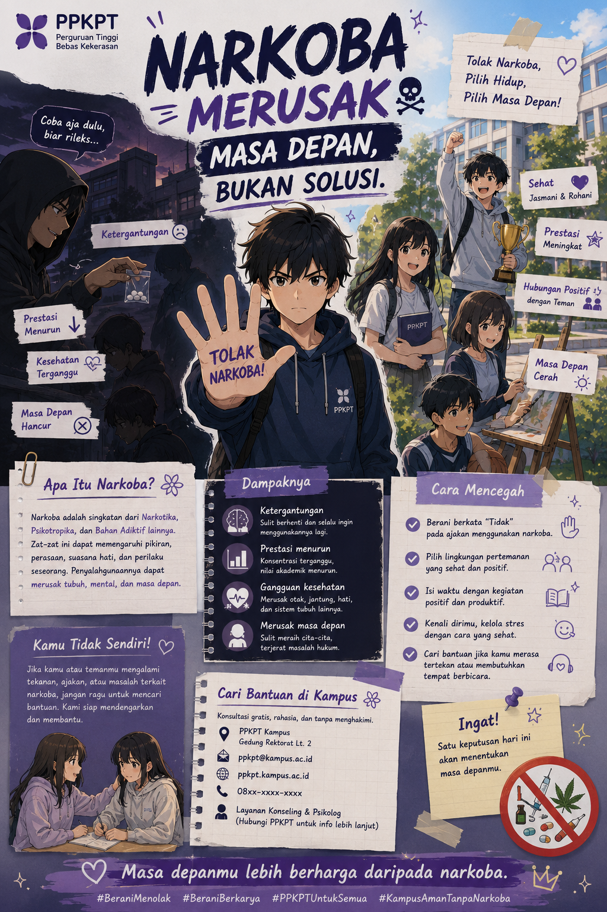

Narkoba adalah singkatan dari Narkotika, Psikotropika, dan Bahan Adiktif lainnya, yaitu zat yang dapat memengaruhi kerja otak dan sistem saraf. Penyalahgunaan narkoba dapat menyebabkan ketergantungan serta berdampak buruk bagi kesehatan, prestasi, dan kehidupan sosial seseorang.
Dampak Penyalahgunaan Narkoba
Menurunnya kesehatan fisik dan mental.
Mengganggu konsentrasi dan prestasi akademik.
Menimbulkan ketergantungan serta berisiko melanggar hukum.
Menambah pengetahuan mengenai bahaya narkoba.
Memilih lingkungan pergaulan yang positif.
Berani menolak ajakan menggunakan narkoba dan mencari bantuan jika menghadapi tekanan.
MSayangi diri dan masa depanmu. Jauhi narkoba, pilih pergaulan yang sehat, dan jadilah generasi yang berprestasi, sehat, serta bebas dari penyalahgunaan narkoba.